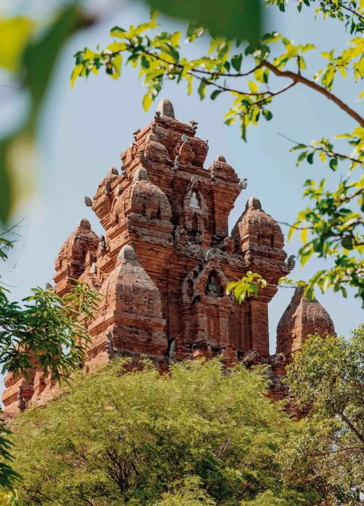

Các điểm du lịch và lễ hội tại Ninh Thuận
Tháp Po Klong Garai
Địa chỉ: Bác Ái, đồi Trầu, phường Đô Vinh, Phan Rang - Tháp Chàm
Tháp Po Klong Garai là một trong các điểm du lịch Ninh Thuận nổi tiếng nhất. Nó được cấp chứng nhận là di tích quốc gia vào năm 1979, thu hút rất nhiều tín đồ du lịch tâm linh cũng như du khách muốn khám phá văn hoá Sa Huỳnh đến tham quan, chiêm ngưỡng.
